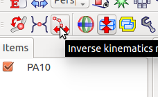

順運動学と逆運動学を使ったロボットの操作¶
Choreonoidの主要な機能の一つは、内蔵の逆運動学アルゴリズムを使ってロボットを操作しモーションを作成することができます。このチュートリアルでは、これら順逆の運動学の機能の使い方を学習します。
ロボットモデルのロード¶
メニューから、”File” -> “Open...” -> “OpenHRP Model File”を選択します。
“(source folder)/share/model/PA10.wrl”ファイルを開きます。
アイテムパネルから “PA10”を選択しチェックボックスをチェックします。するとシーンパネルにロボットが現れるはずです。
順運動学を使ったロボットの操作¶
“Forward Kinematics Mode”ボタンをクリックします。

“Enable link orientation editing”ボタンもクリックします。このボタンをクリックすることで、シーンパネル上でのクリック操作でロボットの操作ができるようになります。

Sceneパネルを右クリックし “Edit mode”を選択します。
“Joint Sliders”パネルかシーンパネル上のロボットを直接クリックすることでロボットの各関節が操作できます。
逆運動学を使ったロボットの操作¶
逆運動学を使ってロボットを操作するには、”Inverse Kinematics Mode”ボタンをクリックしてください。
“Enable link orientation editing”ボタンもクリックします。このボタンをクリックすることで、シーンパネル上でのクリック操作でロボットの操作ができるようになります。
Sceneパネルを右クリックし “Edit mode”を選択します。
シーンパネル上のロボットの関節やリンクを直接クリックすることでロボットが操作できます。